Projects
Things I've built, in and out of class. Most of the code is on GitHub.
Machine Learning
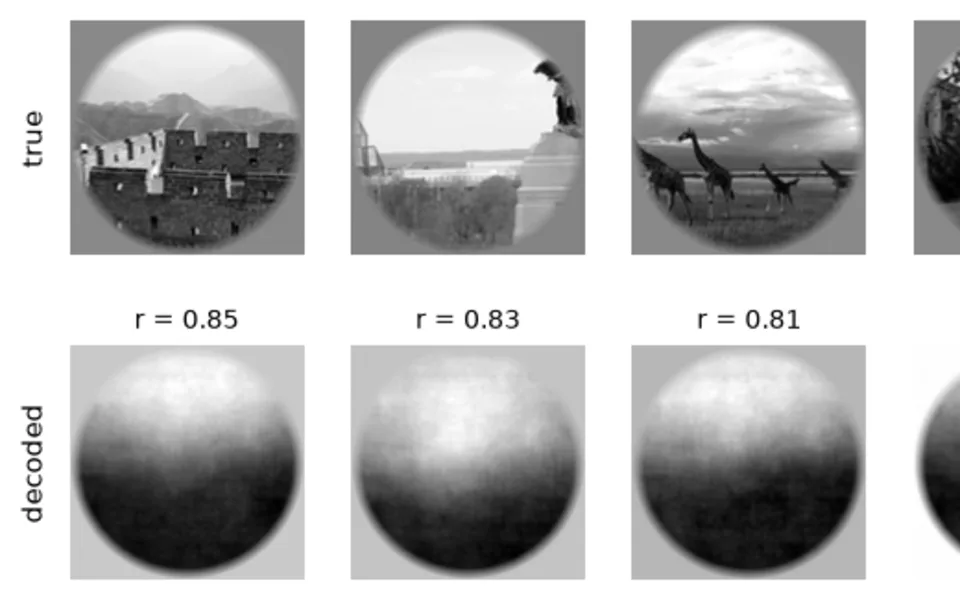
Decoding and Identifying Natural Images from fMRI
Python | scikit-learn | NumPy
Two ways to read images out of visual cortex, using the Kay et al. (2008) dataset. Ridge regression from brain activity straight to pixels recovers little more than where a scene is bright. A Gabor encoding model that predicts the brain's response to each candidate image picks the right one out of 120 in 78% of cases, close to the original paper. Both approaches find the information concentrated in V1 and V2.
Hockey
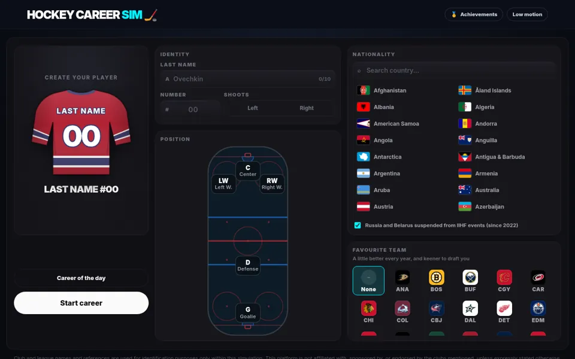
Hockey Career Simulator
JavaScript | no framework | runs entirely in the browser
Create a player at 16 and play out a whole career: junior hockey, the draft, game-by-game NHL seasons, contracts, injuries, international tournaments and, if it goes well, the Hall of Fame.
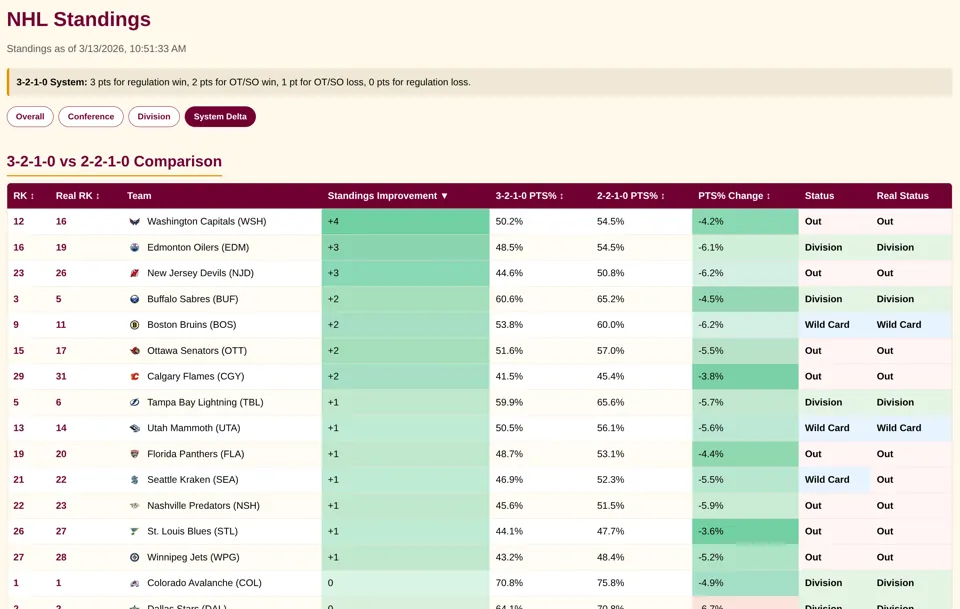
NHL Standings, 3-2-1-0
JavaScript | Google Apps Script
The current NHL standings recalculated with three points for a regulation win, and how each team would move compared with the real 2-2-1-0 table. A scheduled Apps Script job keeps the data current.
Maps and Data Visualization
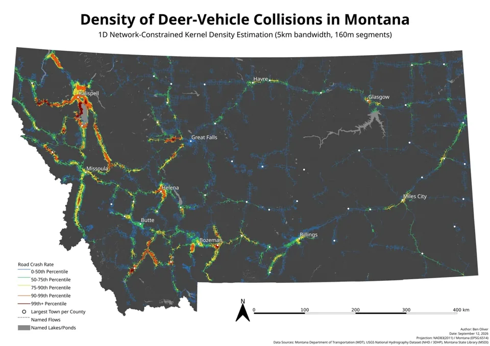
Deer-Vehicle Collisions and River Corridors in Montana
Python | GeoPandas | QGIS
Collision density along every road in Montana from carcass-removal records (2016-2025), compared with distance to rivers and riparian habitat. On highways, the worst stretches sit far closer to water than the rest.
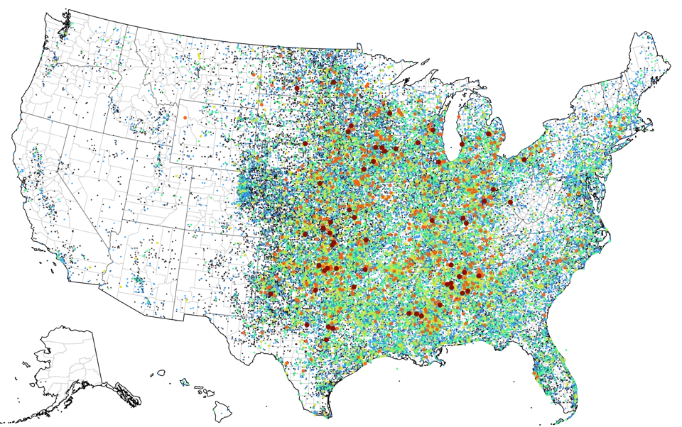
US Tornadoes, 1950-2021
JavaScript | D3 | Observable
Where and how often tornadoes hit the US, 1950-2021.
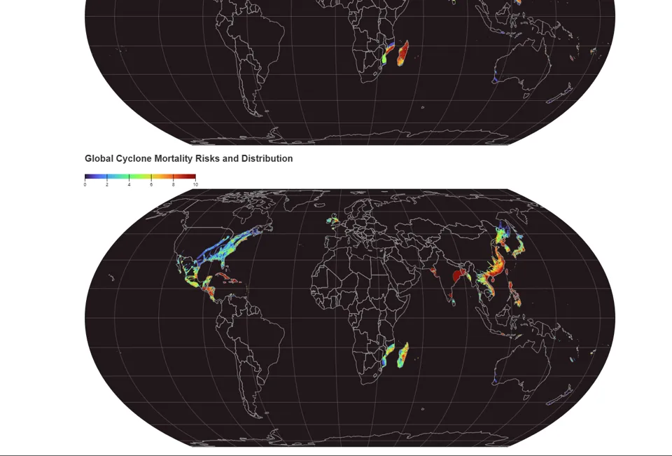
Global Cyclone Frequency and Mortality
JavaScript | D3 | Observable | GeoTIFF
Cyclone frequency and deaths worldwide, drawn from raster (GeoTIFF) data.
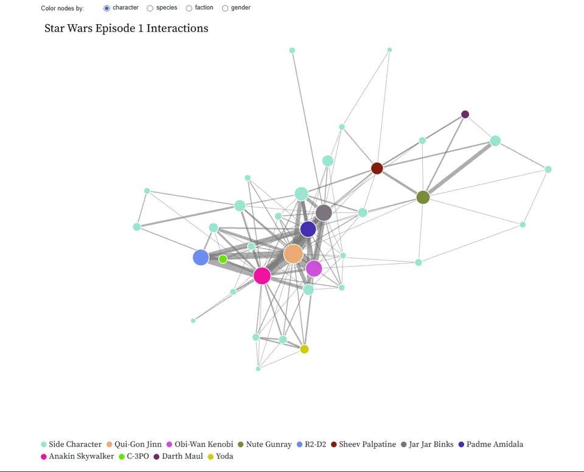
Star Wars Episode I, as a Network
JavaScript | D3 | Observable
The relationships between characters in The Phantom Menace, and between their species.
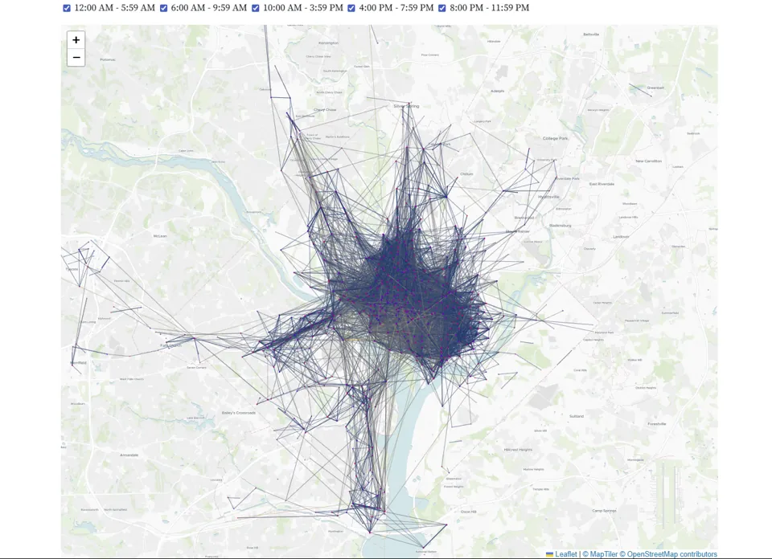
Capital Bikeshare, June 2024
JavaScript | Leaflet | Observable
Daily and hourly Capital Bikeshare use across Washington, D.C. in June 2024.
Simulation
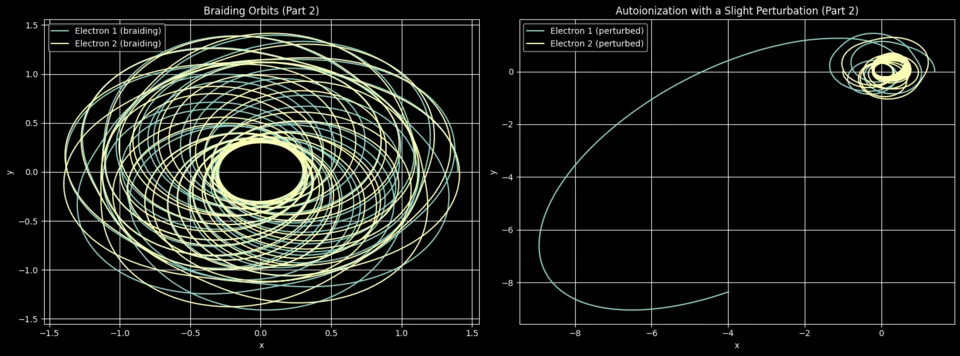
The Classical Helium Atom in Two Dimensions
Python | NumPy | Matplotlib
A nucleus and two electrons, integrated with an adaptive Runge-Kutta 4(5) solver I wrote from scratch. Some starting conditions give braiding orbits that stay bound; changing one velocity by 0.01 sends an electron out of the atom. Plotting how long that takes against starting velocity shows the same spiky pattern at every zoom level, a signature of chaos.
Web Apps
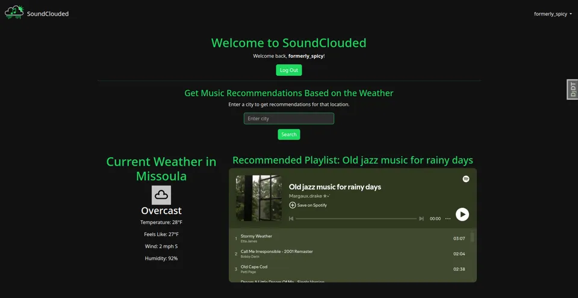
SoundClouded
Web app | Spotify
Spotify recommendations based on the weather where you are right now.
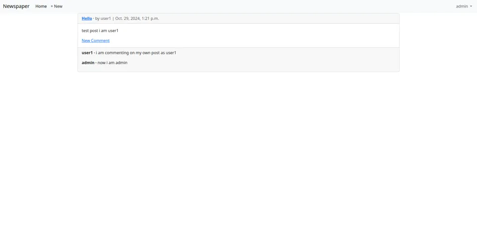
Newspaper App
Python | Django | Bootstrap
A newspaper site with user accounts and authentication, plus django-hijack so admins can view the site as another user.
Tutoring App
Python | Django
Tutors sign up and post the hours they're available, using environment variables and custom filters.